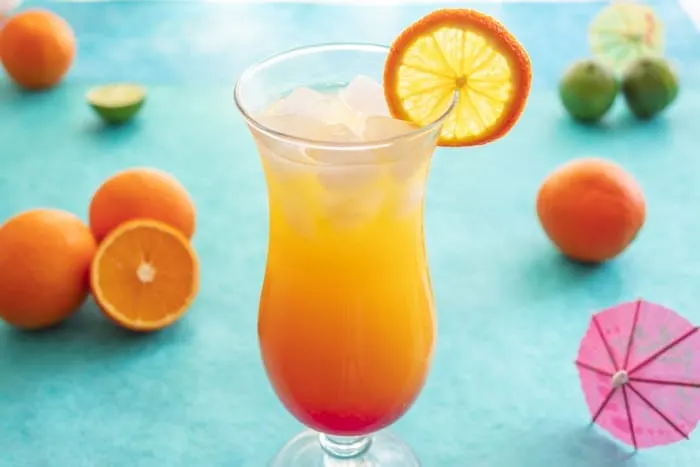
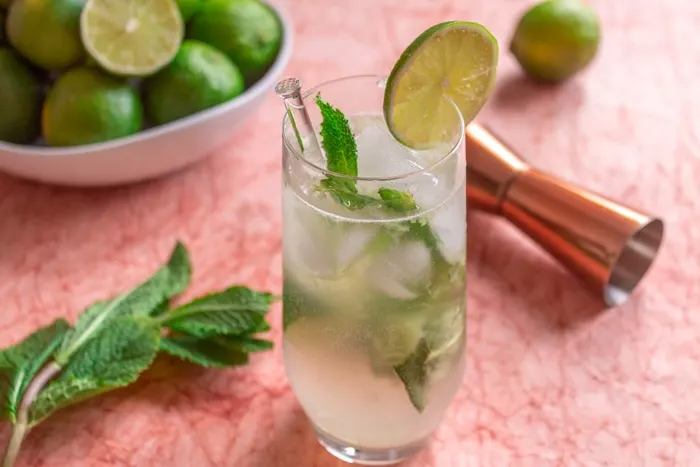
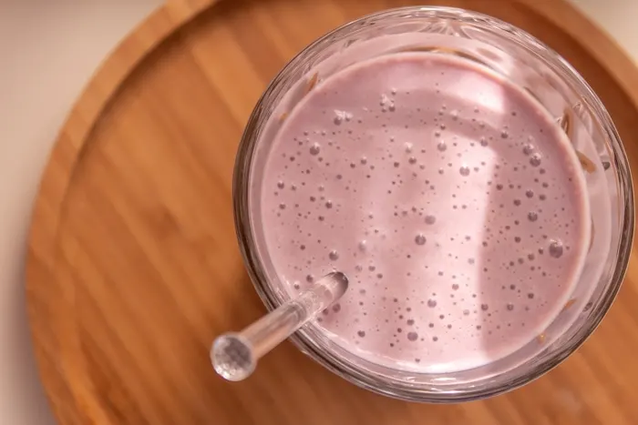
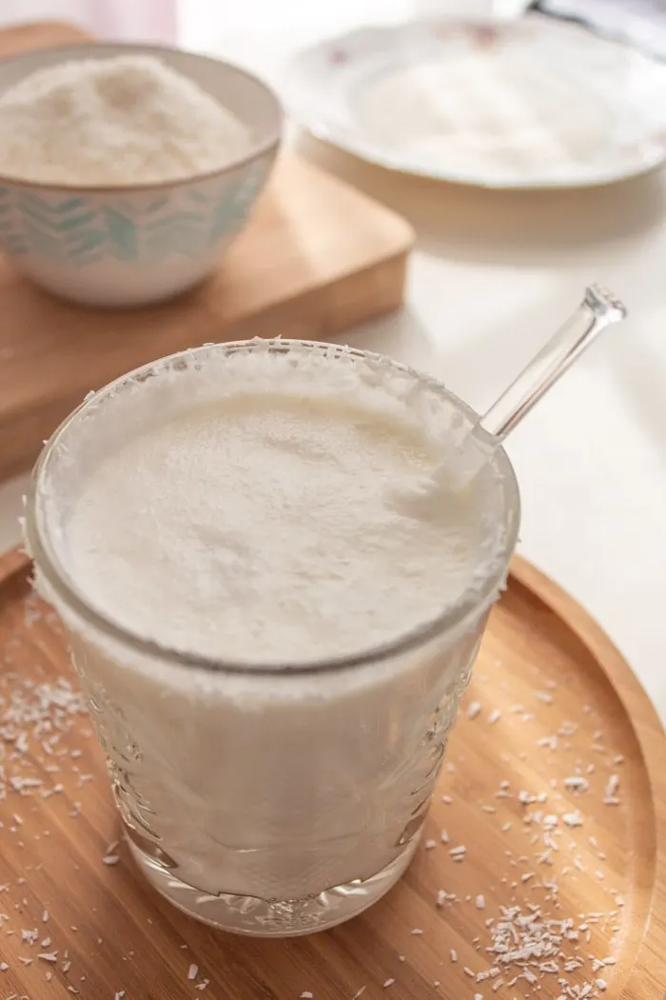
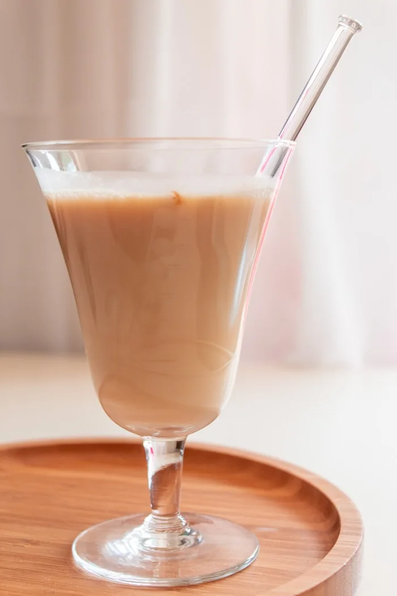

This caipirinha coffee is a delicious alcoholic drink for warm summer days. Besides, you only need a few ingredients to make this cocktail. If you're a coffee-lover, this (easy) recipe is a no-brainer!

SUNRISE COCKTAIL
Are you looking for a refreshing drink for this summer? Then you'll love this Brazilian sunrise cocktail! It's the sunrise cocktail you know, but with a Brazilian touch!

BRAZILIAN MOJITO
You can't go wrong with this Brazilian mojito recipe! It's an easy and popular Cuban summer drink with a Brazilian twist. You'll love this cocktail! Check it out!

RED WINE COCKTAIL
It is made of wine, our good ol sweetened condensed milk, pineapple, and ice cubes. Don’t let its “soft” appearance trick you. I’ve seen many people get tipsy (sometimes tripsy) because they had one too many glasses of this red wine cocktail.

COCONUT COCKTAIL
One of the most popular drink in Brazil is batida de coco, or in English, coconut cocktail. It's a sweet creamy drink, and it may or may not have alcohol.

BRAZILIAN ALEXANDER COCKTAIL
This Brazilian cocktail looks harmless, like a pure glass of milk, but once you’ve had your first sip, you realize how strong it really is. t’s a delicious cocktail to sip on a warm summer evening outdoors.